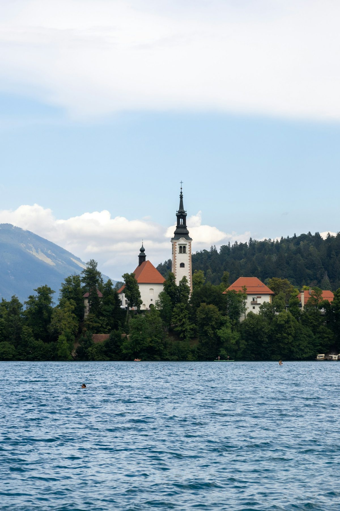

Flights & visas
The boring page that decides the fun page · South African passports · 2027 trip
Five countries are in play, so this page covers the paperwork and flights for all of them — and one asymmetry that does most of the deciding for us. Everything here is a pattern to verify, not a confirmed rule: fees, forms and airfares all get re-checked before anything is booked.
The visa, in one paragraph
For a South African passport, Slovenia (and Croatia) sit in the Schengen area, so they need a short-stay type C visa — the same "Schengen visa" the Slovenia deck budgets at R2,500. One application covers the whole Schengen area, so a single visa answers both Schengen candidates at once. The shape of it: apply up to six months before travel (earlier is better in our house), standard processing runs about fifteen working days, and the file is the usual evidence of good faith — passport with three-plus months of validity beyond the trip, confirmed flights and accommodation, an itinerary, bank statements, and medical travel insurance with at least €30,000 of cover, which is a hard requirement, not a suggestion. Applications go through Slovenia's appointed visa channel in Pretoria; check the current one when we apply rather than trusting this page.
The region, passport-wise
Where it gets interesting: the rest of the shortlist mostly opens once the Schengen visa exists. One application, several countries.
| Country | SA passport, no other visas | With a valid multi-entry Schengen visa in hand |
|---|---|---|
| SloveniaSchengen member | Visa required — the type C application above | Covered — same visa, 90 days in any 180 |
| CroatiaSchengen member since 2023 | Visa required — same type C application covers it | Covered — same visa |
| Montenegro | Visa required | Visa-free up to 30 days |
| Bosnia & Herzegovina | Visa required | Visa-free up to 30 days |
| Albania | eVisa, 90 days | Visa-free 90 days (visa must be valid and previously used) |
The practical reading: whichever country we fly into, the Schengen visa is the key that unlocks the rest of the region for side trips — and visa-free neighbours like Albania become cheaper to enter than to skip.
Flights
There are no direct flights from South Africa to Ljubljana. The gateway is Jože Pučnik Airport (LJU), linked to the city by a frequent airport bus. The realistic one-stop routes run via Istanbul, Doha, or a European hub — Frankfurt, Vienna, Munich or Zurich — and the two decks carry working numbers of R8,276 return (the 7-day plan's find) and R12,000 budgeted (the 10-day plan's line item). Both figures predate 2027; price the real thing before trusting either.
Two alternative gateways are worth pricing before we commit, because they often come in cheaper: fly to Venice or Trieste and bus it to Ljubljana (roughly 1½–2½ hours), or into Zagreb and do the same (about two hours). The same trick works in reverse for the current plan — Split (SPU) in, Tirana (TIA) out stays the open-jaw shape of the existing itinerary, and it doesn't require a single new airport decision until the country is chosen.
Getting around once we're there
Both Slovenia plans are car-free, and the country's bus map is the reason that's viable: Ljubljana → Bled runs every 30–40 minutes and takes about 40; Bohinj is another bus beyond Bled, about 1h 30m from the capital; Postojna is 50 minutes; Piran is the long leg at 2h 30m, several times daily. A Ljubljana city pass bundles museums and transport for the capital days. Timetables are patterns, not promises — re-check everything six to eight weeks out, same rule as the rest of the site.
Field note: the paperwork order writes itself — visa first (it's the long pole at ~15 working days), flights second once the visa is in motion, accommodation last because it's the flexible bit. Insurance in the visa file, not as an afterthought.Field note · Balkans 2027